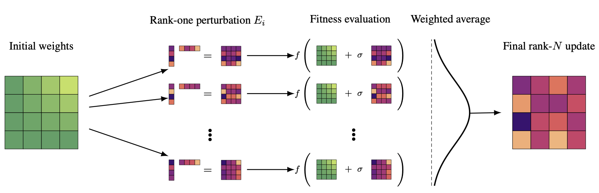

Evolution Strategies at the Hyperscale
- Bidipta Sarkar*
- Mattie Fellows*
- Juan Agustin Duque*
- Alistair Letcher\(^\dagger\)
- Antonio León Villares\(^\dagger\)
- Anya Sims\(^\dagger\)
- Dylan Cope\(^\dagger\)
- Jarek Liesen\(^\dagger\)
- Lukas Seier\(^\dagger\)
- Theo Wolf\(^\dagger\)
- Uljad Berdica\(^\dagger\)
- Alexander David Goldie
- Aaron Courville
- Karin Sevegnani
- Shimon Whiteson*
- Jakob Nicolaus Foerster*

Abstract
We introduce Evolution Guided General Optimization via Low-rank Learning (EGGROLL), an evolution strategies (ES) algorithm designed to scale backprop-free optimization to large population sizes for modern large neural network architectures with billions of parameters. ES is a set of powerful blackbox optimisation methods that can handle non-differentiable or noisy objectives with excellent scaling potential through parallelisation. Na{\"i}ve ES becomes prohibitively expensive at scale due to the computational and memory costs associated with generating matrix perturbations \(E\in\mathbb{R}^{m\times n}\) and the batched matrix multiplications needed to compute per-member forward passes. EGGROLL overcomes these bottlenecks by generating random matrices \(A\in \mathbb{R}^{m\times r},\ B\in \mathbb{R}^{n\times r}\) with \(r\ll \min(m,n)\) to form a low-rank matrix perturbation \(A B^\top\) that are used in place of the full-rank perturbation \(E\). As the overall update is an average across a population of \(N\) workers, this still results in a high-rank update but with significant memory and computation savings, reducing the auxiliary storage from \(mn\) to \(r(m+n)\) per layer and the cost of a forward pass from \(\mathcal{O}(mn)\) to \(\mathcal{O}(r(m+n))\) when compared to full-rank ES. EGGROLL's efficiency results in a hundredfold increase in training throughput for billion-parameter models at large population sizes, nearly reaching the throughput of pure batch inference. A theoretical analysis reveals our low-rank update converges to the full-rank update at a fast \(\mathcal{O}\left(\frac{1}{r}\right)\) rate. Our experiments show that (1) EGGROLL does not compromise the performance of ES in tabula-rasa RL settings, despite being faster, (2) it is competitive with GRPO as a technique for improving LLM reasoning, and (3) EGGROLL enables stable pre-training of nonlinear recurrent language models that operate purely in integer datatypes.
The website template was borrowed from Easy Academic Website Template and Jon Barron